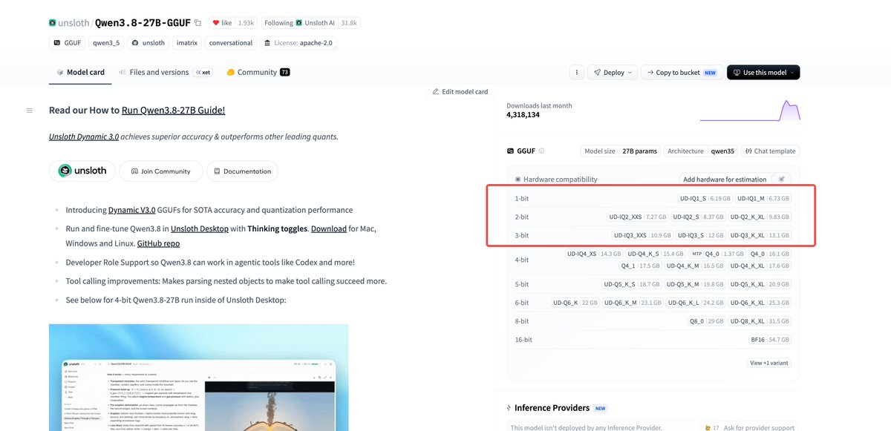

Wilf Lin
@Wilf_Lin
@Lonely__MH @UnslothAI 都量化到流口水了。
还不如搞个9b

Lonely
@Lonely__MH
🎉好消息！ 8G 内存 Mac 也能部署 Qwen 3.8-27B 了！
@UnslothAI 刚刚整了个大活，发布了基于 Qwen3.8-27B 的 Dynamic 3.0 超级量化版本！
以往 27B 这种体量的多模态大模型，至少需要 30G 以上的显存/内存才能勉强带得动
但这次，通过极致的 1-bit / 2-bit 量化（UD-IQ1_M / https://t.co/GUgl90pVKS https://t.co/AddLyXaT8h